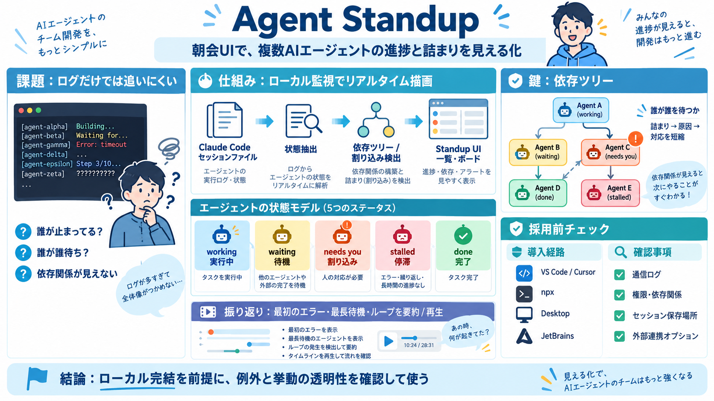

Agent
For security reasons, the GUI can only be accessed from the local network interface (`localhost`/`127.0.0.1`), therefore…

朝会UIで、AI進捗を可視化
Claude Code の実行中に動く複数エージェントの状態を、スタンドアップ（朝会）みたいに一覧・ボード表示します。
ログは読めない
複数エージェント同時実行では、依存関係と「誰が詰まっているか」がログから追いづらくなります。
セッションファイル読取り
Claude Code がローカルで生成する「セッションファイル」を読み取り、各エージェントの状態をリアルタイムに描画します。
状態モデルで把握
エージェントは状態で分類され、止まり方（waiting / needs you / stalled）まで含めて追えます。
依存ツリーが鍵
「誰が誰を待っているか」をツリー表示し、詰まりの位置を短時間で特定できます。
導入経路はいくつか
VS Code拡張、Cursor / Windsurf / VSCodium、ターミナル（npx）、デスクトップアプリ、JetBrains（External Tool）など複数の導入経路があります。
“共有”の意味
紹介文では、共有されるのはスクリーンキャプチャではなく「実際のコマンド出力・差分など（セッション由来）」と説明されています。
コード送信しない主張
「あなたのコードは外部に送られない」「ローカルで動き、セッションファイルを読む」とされます。
振り返りを再生
過去セッションを「最初のエラー」「最長待機」「ループ」などでハイライトし、Markdown要約や動画書き出しで振り返れます。
“楽しい”だけではない
演出（スタンドアップっぽさ）もありますが、複数同時実行時の認知負荷を下げ、監督・割り込み対応・効率に効くのが中核です。
採用判断のチェック
個人・検証では体験価値が大きい一方、企業・機密環境では「通信」「ローカルサーバ」「セッション解析範囲」を追加確認してから採用するのが安全です。
For security reasons, the GUI can only be accessed from the local network interface (`localhost`/`127.0.0.1`), therefore…
| 550th | Logo for StandUp Wireless StandUp Wireless 2016, Norcross (United States), Unfunded | Provider of unlimited …
Disclosures Colophon © 2002 2003 2004 2005 2006 2007 2008 2009 2010 2011 2012 2013 2014 2015 2016 2017…
#### Description Provider of prepaid wireline home phone services intended to serve low-income consumers. The company o…
Learn how to scale agentic AI for measurable ROI across your enterprise. This playbook outlines the top barriers that li…